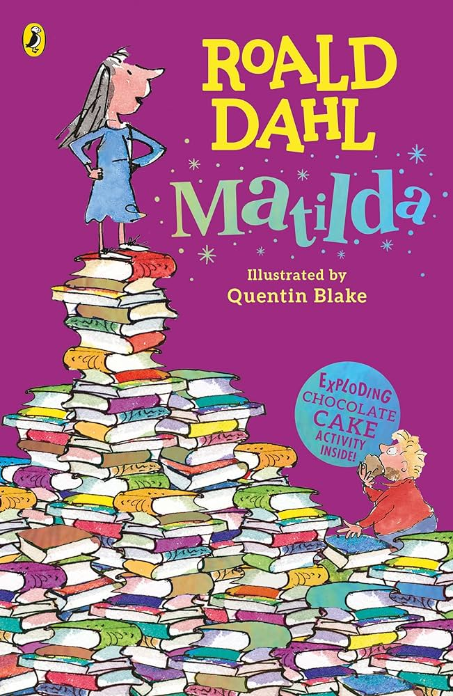
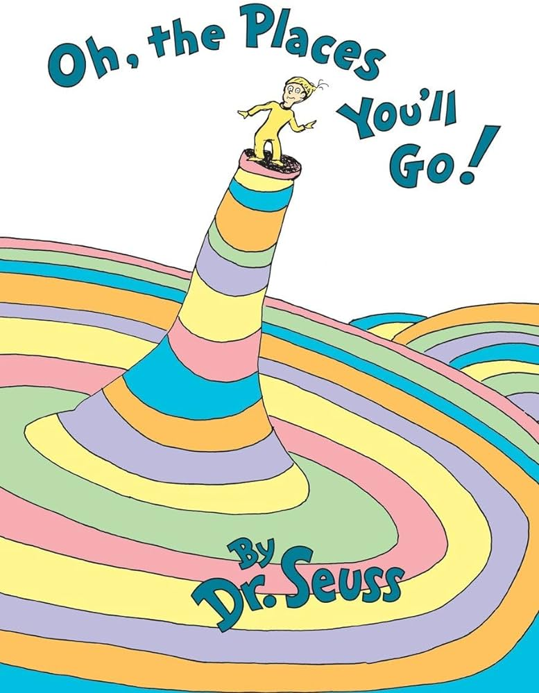
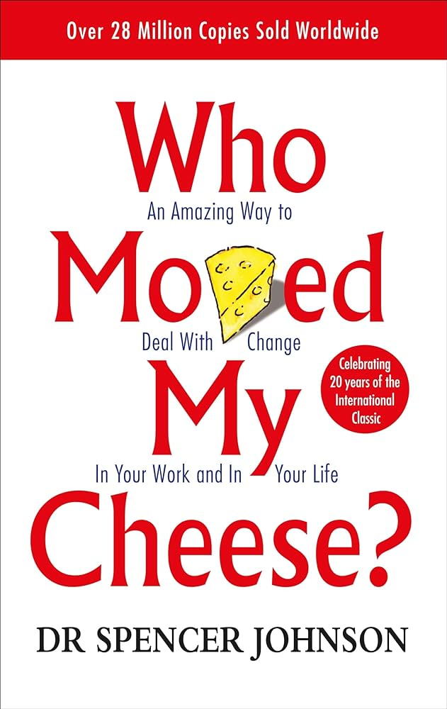
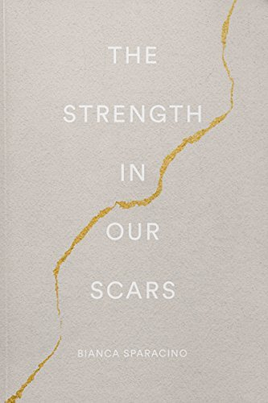
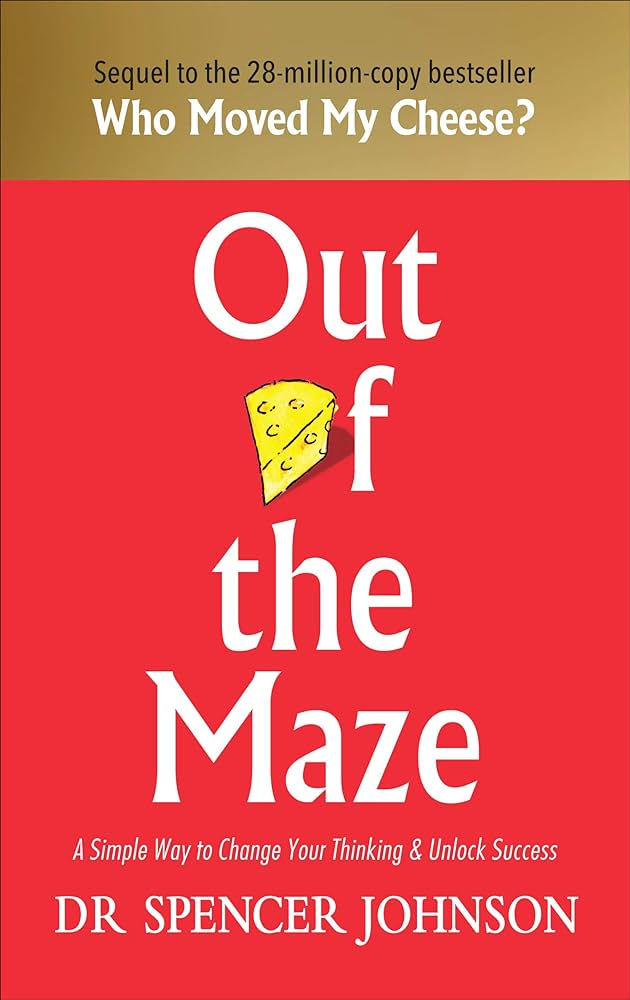
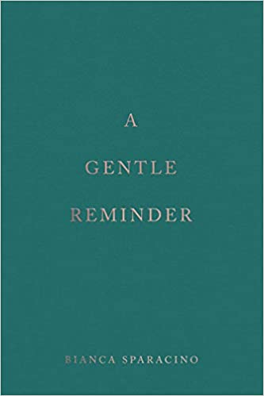
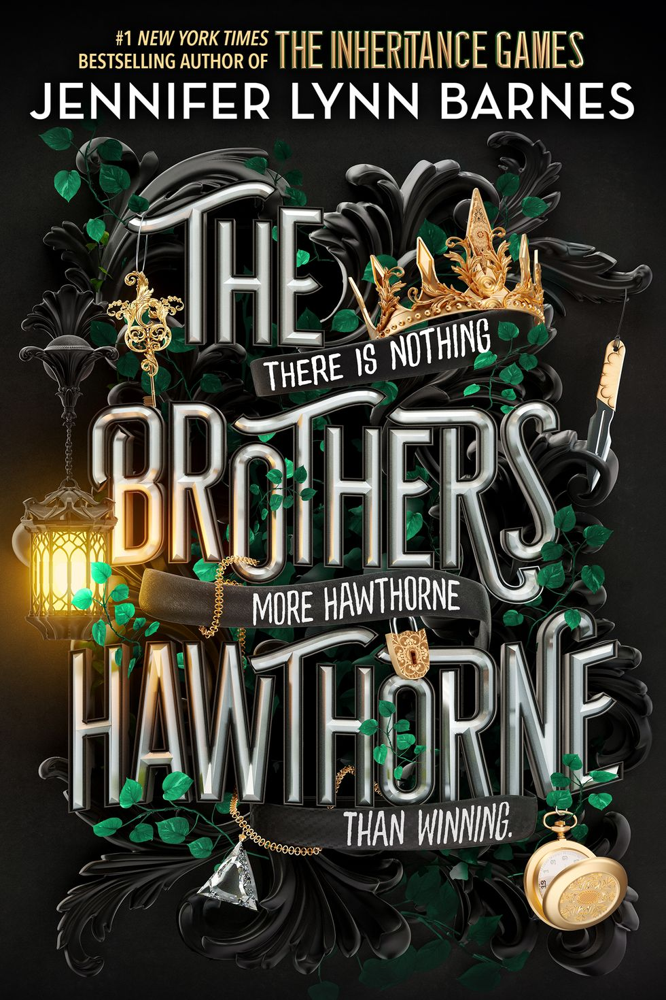
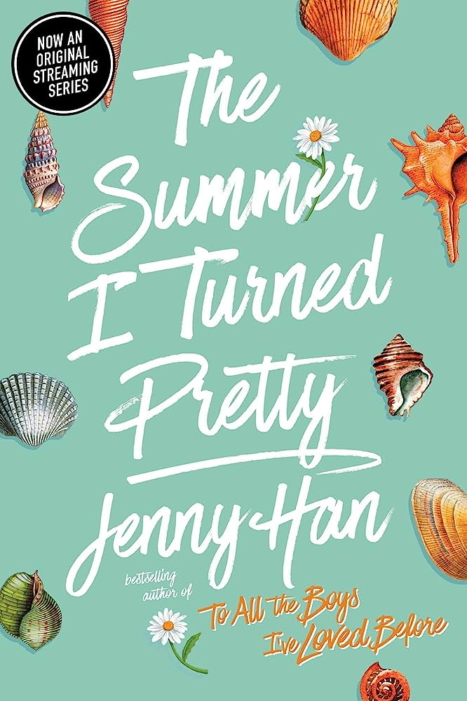
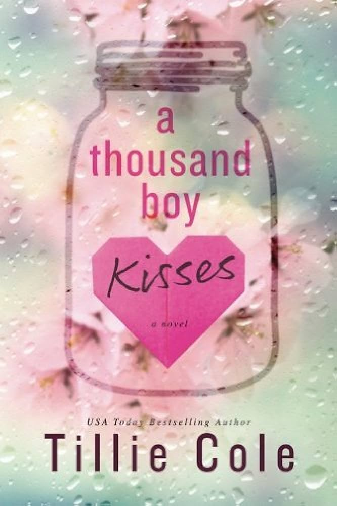

Childrens Books
MATILDA
Genre: Children's novel
Author: Roald Dahl
click here to download bookSynopsis:Matilda is a 1988 children's novel by British author Roald Dahl. It was published by Jonathan Cape. The story features Matilda Wormwood, a precocious child with an uncaring mother and father, and her time in school run by the tyrannical headmistress Miss Trunchbull.
OH, THE PLACES YOU'LL GO!
Genre: Children's book
Author: Dr.Seuss
click here to download bookSynopsis:Oh, the Places You'll Go! is a children's book, written and illustrated by children's author Dr. Seuss. It was first published by Random House on January 22, 1990. It was his last book to be published during his lifetime before his death, on September 24, 1991 at the age of 87. The book concerns the journey of life, its challenges, and joys.Though written in the style of previous books such as Green Eggs and Ham and The Cat in the Hat, Oh, the Places You’ll Go! has many specific characters, including a narrator and "the reader". A young boy, referred to simply as "you", initiates the action of the story; the presence of a main character helps readers to identify with the book. Unlike other Dr. Seuss books, it is written in the second person and uses the future tense.
SULWE

Genre: Children's book
Author: Lupita Nyongo
click here to download bookSynopsis:Sulwe is a children's fiction picture book by actress Lupita Nyong'o. It follows the story of a young girl who wishes for her dark skin to be lighter. The story is ultimately about colorism and learning to love oneself, no matter one's skin tone.
Motivational Books/Self Help And Poetry Book
WHO MOVED MY CHEESE
Genre: Self help/Motivational
Author:Spencer Johnson
click here to download bookSynopsis: Who Moved My Cheese? An Amazing Way to Deal with Change in Your Work and in Your Life, published on September 8, 1998, is a bestselling work and motivational business fable by Spencer Johnson. The text describes the way one reacts to major change in one's work and life, and four typical reactions to those changes by two mice and two "Littlepeople," during their hunt for "cheese."
THE STRENGHT IN OUR SCARS
Genre: poetry
Author:Bianca Sapracino
click here to download bookSynopsis: "The Strength in Our Scars" is a soul-stirring collection that celebrates the inherent strength and beauty that emerges from life's challenges. It inspires readers to embrace their scars, both visible and invisible, and to find hope and healing in their journey toward self-acceptance and personal growth.
OUT OF THE MAZE
Genre: Self help/Motivational
Author:Spencer Johnson
click here to download bookSynopsis: "Out of the Maze" is a sequel to "Who Moved My Cheese?" by Spencer Johnson. It follows the character Hem, who is trapped in a frustrating maze and resistant to change. With the help of a wise mentor named Hope, Hem learns to challenge his beliefs, overcome fear, and embrace change. The book emphasizes the importance of adapting to new circumstances and finding fulfillment by letting go of limiting beliefs. It offers practical wisdom and inspiration for personal growth and navigating life's challenges.
A GENTLE REMINDER
Genre: poetry
Author: Bianca Sparacino
click here to download bookSynopsis:A Gentle Reminder” by Bianca Sparacino is a poignant and heartwarming novel that takes readers on an emotional journey of self-discovery, love, and the profound impact of gentle reminders in one’s life. Set in the picturesque town of Serenity Cove, the story follows the life of Olivia Matthews, a young woman in her late twenties, who finds herself at a crossroads after facing a series of unexpected challenges.
Mystery Books
THE INHERITANCE GAMES

Genre: Mystery/young adult
Author: Jennifer Lynn Barnes
click here to download bookSynopsis:The Inheritance Games is a young adult novel series by author Jennifer Lynn Barnes, published by Little, Brown Books for Young Readers. The series focuses on a girl named Avery Kylie Grambs, and the Hawthorne family. It currently consists of four books: The Inheritance Games[1] (2020), The Hawthorne Legacy[2] (2021), The Final Gambit (2022), and a standalone book that follows the events of the series was released on August 29, 2023, The Brothers Hawthorne.In The Inheritance Games, Avery is revealed to have been chosen to inherit the will of deceased billionaire Tobias Hawthorne. Despite the fact that she does not seem to remember meeting this billionaire or even hearing his name, she takes up the task to unlock the chains of mysteries to find the truth.
THE HAWTHORNE LEGACY

Genre: Mystery/young adult
Author: Jennifer Lynn Barnes
click here to download bookSynopsis:"The Hawthorne Legacy" is a captivating young adult fantasy novel by Jennifer Lynn Barnes. The second installment in "The Inheritance Games" series, it follows Avery Grambs as she unravels the mysteries of the Hawthorne estate. Faced with intricate puzzles and dangerous secrets, Avery must outsmart her rivals and secure her place in the inheritance. With themes of family, loyalty, and power, the book immerses readers in a thrilling world of twists and revelations. Packed with suspense and a touch of romance, "The Hawthorne Legacy" sets the stage for an eagerly anticipated conclusion, leaving readers eager for more.
THE FINAL GAMBIT

Genre: Mystery/young adult
Author: Jennifer Lynn Barnes
click here to download bookSynopsis:"Final Gambit" is a gripping thriller by an anonymous author. Set in a high-stakes world of espionage, it follows an elite agent on a dangerous mission to thwart a global conspiracy. With heart-pounding action and unexpected twists, the book keeps readers on the edge of their seats until the final page.
THE BROTHERS HAWTHORNE
Genre: Mystery/young adult
Author: Jennifer Lynn Barnes
click here to download bookSynopsis:"Brothers Hawthorne" is a poignant tale of sibling bonds and family secrets. It explores the complex dynamics between the Hawthorne brothers as they navigate a web of hidden truths and personal struggles. With themes of loyalty, forgiveness, and self-discovery, the book delves into the depths of brotherhood, leaving a lasting impact.
Romance Books
THE CHEAT SHEET

Genre:Romance
Author: sarah Adams
click here to download bookSynopsis:A friends-to-lovers, fake-dating, sports romance, The Cheat Sheet has it all. Grade: A Summary: The friend zone is not the end zone for Bree Camden, who is helplessly in love with her longtime best friend and extremely hot NFL legend, Nathan Donelson.
THE SUMMER I TURNED PRETTY
Genre:Romance
Author: Jenny Han
click here to download bookSynopsis:"The Summer I Turned Pretty" is a heartfelt coming-of-age novel by Jenny Han. Set against the backdrop of a coastal town, it follows the transformative summer experiences of 15-year-old Belly. Through love, friendship, and self-discovery, Belly navigates the complexities of growing up, facing personal conflicts and learning valuable lessons about family, identity, and the bittersweet nature of first love.
A THOUSAND BOY KISSES
Genre:Romance
Author: Tillie Cole
click here to download bookSynopsis:"A Thousand Boy Kisses" is a poignant romance novel by Tillie Cole. It tells the heart-wrenching story of Rune and Poppy, childhood best friends turned soulmates. As they navigate the challenges of life, love, and loss, their bond is tested. With emotional depth and a beautiful exploration of young love, the book captures the power of connection, the fragility of life, and the enduring strength of true love.
BETTER THAN THE MOVIES

Genre:Romance
Author: Lynn Painter
click here to download bookSynopsis:Better Than the Movies" is a charming contemporary romance by Lynn Painter. It follows Liz Buxbaum, a hopeless romantic who believes in the magic of movie love. When she meets her unassuming crush, Max, they embark on a journey to bring their own love story to life. With humor and heart, the book explores the complexities of real-life romance versus reel-life fantasies.